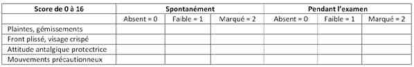
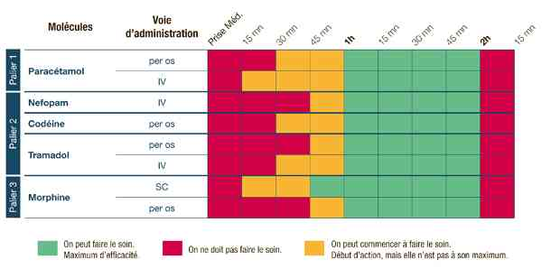

Bienvenue Sur Medical Education
Douleur
Spécialité : symptomes /
Points importants
-
Evaluer systématiquement la douleur dès l'accueil même si le patient ne s'en plaint pas (60% des patients arrivent aux urgences avec une composante douloureuse non obligatoirement au premier plan)
-
Le patient doit évaluer lui-même sa douleur (auto-évaluation > hétéro-évaluation)
-
Importance de la mise en place d'un protocole de service de délégation de l'infirmier
-
Les échelles validées dans l'urgence sont l'EN et l'EVA. Toujours noter la valeur sur le dossier (même si elle est égale à 0)
-
Commencer à traiter la douleur le plus tôt possible (même sans connaître le diagnostic)
-
La sédation de la douleur n'exclut pas un diagnostic grave
-
L'efficacité d'un placebo n'exclut pas une réelle douleur
Présentation clinique / CIMU
SIGNES FONCTIONNELS
-
La douleur n'est pas obligatoirement exprimée chez :
-
le jeune enfant
-
le vieillard stoïque
-
le confus
-
le malentendant
-
le patient avec barrière linguistique
CONTEXTE
Présentation clinique / CIMU
SIGNES FONCTIONNELS
-
La douleur n'est pas obligatoirement exprimée chez :
- le jeune enfant
- le vieillard stoïque
- le confus
- le malentendant
- le patient avec barrière linguistique
CONTEXTE
Terrain
- Age
- Allergies connues
- Toxicomanie
- Grossesse
Traitement
- Traitement antalgique reçu ou pris par le patient avant l'arrivée aux urgences
Antécédents
- Ulcère gastroduodénal
- Insuffisance hépatique et/ou rénale
- Insuffisance respiratoire
Circonstances de survenue
- Contexte médical, traumatologique ou inflammatoire
- Douleur d'origine coronarienne
EXAMEN CLINIQUE
Evaluation de la douleur
 _272 Tableau Echelle d'observation comportementale (EOC)
- La douleur doit être évaluée systématiquement dès l'arrivée du patient à l'accueil (IAO) par l'échelle numérique (EN) ou l'échelle visuelle analogique (EVA)
- L'échelle verbale simplifiée (EVS) peut être utilisée en cas d'incompréhension du patient pour les deux premières échelles (mais cette échelle n'est pas validée dans le contexte de l'urgence)
- L'échelle d'observation comportementale (EOC) peut être utilisée chez les patients ne pouvant répondre
- catégoriser l'intensité douloureuse
- Douleur modérée : 3 = EVA ou EN = 6 ou 0 < EOC < 8
- Douleur sévère EVA ou EN > 6 ou EOC = 8
La douleur est majorée aux urgences par
- L'anxiété
- L'attente
- L'ignorance du pronostic
- Les transbordements
- Les examens successifs
CIMU
- Tri 2 si EN ou EVA > 6 (l'IAO doit alors immédiatement prévenir le médecin)
- Tri 3 si EN < 5
- Le tri est également fonction de la cause de la douleur (ex. : tri 2 si douleur thoracique peu intense mais suspicion d'IDM ou de dissection aortique...)
Traitement
TRAITEMENT PREHOSPITALIER/INTRAHOSPITALIER
Stabilisation initiale
- Objectif : obtenir une réduction de l'intensité douloureuse (EVA ou EN < 3)
-
Mise en oeuvre éventuelle de moyens physiques :
- irrigation : si brûlures
-
traumatisé :
- cryothérapie, packs réfrigérants
- immobilisation (attelle, collier cervical rigide, écharpe...)
- venins thermolabiles : chaleur
- installation du patient en respectant les positions antalgiques
- protection thermique si nécessaire (afin d'éviter les frissons sur les foyers de fracture)
- anesthésies locorégionale (notamment sur fracture de la diaphyse fémorale : bloc iliofascial, de la face, digital transthécal)
Suivi du traitement
- Anticiper les douleurs induites, notamment de mobilisation
 _273 Tableau Chronologie d'action des antalgiques
- Le paracétamol peut être renouvelé 4 h après (8 h après si insuffisance rénale sévère)
MEDICAMENTS
Antalgiques de niveau 1 type paracétamol - Propacétamol
-
IV, 2 g de Propacétamol dans 100 mL de glucose et à 5% ou NaCl 0,9% en 15 min :
- délai d'action = 10-15 min
- délai de réévaluation de la douleur = 30 min
- effet maximum = 2 h
- durée d'action = 4-6 h
-
Voie orale :
- délai d'action = 30-60 min
- durée d'action = 8 h
-
Contre-indications absolues :
- insuffisance hépatique
- hypersensibilité au paracétamol
-
Contre-indications relatives :
- grossesse
- insuffisance rénale sévère
Antalgiques de niveau 2
- Paracétamol + codéine ou paracétamol + dextropropoxyphène
- Topalgic (tramadol) : contre-indiqué chez la femme enceinte, allaitement, épilepsie, insuffisance respiratoire ou hépatique sévère
- Acupan (néfopam) sur un sucre sublingual : contre-indiqué chez la femme enceinte, allaitement, épilepsie, glaucome à angle fermé, prostatisme, patient < 15 ans
AINS du type Kétoprofène®
-
IV (100 mg dans 100 mL de glucosé à 5% ou NaCl 0,9%) à perfuser en 20 min (ne pas mélanger à d'autres produits) :
- délai d'action = 15-20 min
- délai de réévaluation de la douleur = 30 min
- durée d'action = 4 h
-
Voie orale (150 mg toutes les 12 h) :
- délai d'action = 45-90 min
- durée d'action = 8 h
-
Voir rectale (100 mg toutes les 8 h) :
- délai d'action = 45-60 min
- durée d'action = 8 h
-
Contre-indications absolues :
- enfant de moins de 15 ans
- femmes enceintes au dernier trimestre
- allaitement
- patient hypovolémique déshydraté
- anomalie de l'hémostase
- insuffisance rénale sévère
- insuffisance hépatique
- ulcère gastroduodénal en évolution
- allergies ou asthme déclenchées par le kétoprofène, l'aspirine ou autre AINS
-
Contre-indications relatives :
- grossesse avant le sixième mois
- autre AINS
- héparine parentale
- lithium
- méthotrexate (si > 15 mg/sem)
- ticlopidine
Antalgiques de palier 3 : titration morphinique
- Diluer une ampoule (10 mg = 1 mL) dans 10 mL d'EPPI (1 mg/mL)
-
Bolus IV à administrer toutes les 5 min si l'EVA ou l'EN initiales sont > 6 et jusqu'à ce qu'elles soient < 3 (patient soulagé) :
- 2 mg si poids du patient < 60 kg
- 3 mg si voire du patient = 60 kg
- Relais par voie SC ou PCA après 2 h du dernier bolus ayant soulagé le patient
-
Contre-indications absolues :
- insuffisance respiratoire décompensée
- insuffisance hépatique sévère (avec l'encéphalopathie)
- HTIC
- épilepsie non contrôlée
-
Contre-indications relatives :
- grossesse au troisième semestre
- allaitement
-
Antidote = naloxone :
- indications : persistance d'une FR < 10/min malgré l'arrêt des réinjections
- objectifs : lever progressivement la dépression respiratoire sans faire réapparaitre la douleur
-
modalités d'administration :
- diluer 1 amp dans 10 mL d'EPPI
- bolus 1 mL IVD toutes les 2 min jusqu'à ce que la FR > 12/min
- à renouveler si nécessaire. Puis 2/3 de la dose initiale nécessaire par heure en IVSE
- délai d'action : 2 min
- durée d'action : 20-30 min
- surveillance pendant 4-6 h
MEOPA (Kalinox®) (mélange équimolaire d'oxygène et de protoxyde d'azote)
- Entraîne une sédation consciente
- Effet antalgique rapide (en 3 min) et immédiatement réversible
-
Indications :
- réduction de luxation périphérique ou de fracture simple
- l'analgésie peut être complété avec d'autres antalgiques ou une AL
- soins de brûlures
- exploration, suture d'une plaie superficielle
- perfusion de l'enfant
-
Contre-indications :
- épanchement gazeux : PNO, pneumomédiastin, pneumopéritoine
- occlusion digestive
- embolie gazeuse
- accident de plongée
- fracture des os de la face
- HTIC
- altération de la conscience
- 1er trimestre de grossesse
-
Effets indésirables :
- chaleur
- lourdeur
- sueurs
- rêves
- perte de la notion du temps
- perception éloignée des sons
- picotements
- agitation, nervosité
- cauchemars
- dysphorie, dysphasie, ébriété
Co-analgésie
- Décontracturants musculaires
- Antispasmodiques
- Tranquillisants
- Antidépresseurs et anti-épileptiques
- Corticoïdes
Surveillance
CLINIQUE
Réévaluation de la douleur 30 min au moins après l'administration des antalgiques
Réévaluation de l'intensité douloureuse au cours de la titration morphinique
- Après 5 bolus : nécessité d'une revalidation médicale pour poursuite de la morphine
- Après 10 bolus : dose d'alerte (reconsidérer le problème)
-
Surveillance :
- douleur (EVA ou EN)
- FR (le plus important++)
- FC, PA, SpO2
- niveau de vigilance (score de Ramsay)
- effets secondaires : prurit, nausées, vomissements, rétention urinaire, sédation
- jusqu'à au moins 60 min après le fin de la titration
-
Arrêt de la morphine si :
- trouble de vigilance/Ramsay > 2
- effets indésirables
- FR < 10/min
- si persistance, administrer la naloxone (Cf. Traitement)
-
Relais morphinique :
-
injection SC/4 h :
- adapter la dose et le délai entre les doses
- 2 h environ après la fin de titration
- doses : 5-10 mg SC/4 à 6 h :
- à adapter en fonction du potentiel évolutif douloureux
- diminuer les doses chez le sujet âgé
-
injection SC/4 h :
- Pas d'administration continue en IV (dangereux)
-
PCA :
- dilution : 50 mg de morphine dans 50 mL
- bolus : 1 mg = 1 mL ; période réfractaire = 7 min ; dose maximale/4 h = 35 mg
- surveillance horaire au début puis toutes les 2 h puis toutes les 3 à 4 h
Devenir / orientation
CRITERES D'ADMISSION
-
Aggravation avec signes de surdosage
-
Non soulagement total de la douleur (EVA ou EN = 3)
-
Autre problème non lié à la douleur
CRITERES DE SORTIE
Vers un service d'aval
- Une heure au moins après la dernière injection de morphine IV (hormis PCA)
-
Et seulement si :
- FR > 10/min
- SpO2 normale
Vers le domicile
- 2 h au moins après la dernière injection de morphine IV (hormis PCA)
-
Et seulement si :
- FR > 10/min
- et SpO2 normale
- EVA ou EN < 3
- cause de la douleur éliminée
ORDONNANCE DE SORTIE
-
EVA ou EN de sortie = 0 et cause de la douleur éliminée :
- pas d'antalgie
-
EVA ou EN < 3 + potentiel évolutif douloureux faible :
- antalgique de palier 1 +/- AINS +/1 co-analgésie
-
EVA ou EN < 3 + potentiel évolutif douloureux fort :
- antalgique de palier 1 ou II +/- AINS +/1 co-analgésie
RECOMMANDATIONS DE SORTIE
- Immobilisation et/ou surélévation des membres
- Repos
- Observance du traitement
- Déconseiller la conduite automobile après traitement sédatif (morphine, MEOPA, codéine, dextropropoxyphène, Topalgic®...)
Bibliographie
Auteur(s) : Patrick PLAISANCE, Jean-Christophe BOULARD